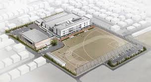

開催概要
- 日時：2025年11月21日（金）13:00〜（受付開始）
- 場所：鈴鹿市立大木中学校（〒513-0846 三重県鈴鹿市北堀江2丁目15-1）
内容
- 子どもたちが自ら学ぶ複線型授業の参観
（国語）・（数学）・（社会）・（英語）・（理科）・（技術）・（特別支援）で開催予定
- 対話を軸とした事後研修会
どの授業からでも自分事にし、教科・校種を越えた概念化を行います
新校舎のご案内
令和5年度、新校舎に建て替わりました！



申し込み方法
大木中学校のホームページより掲載するフォームより申し込み
定員に達し次第、募集を締め切り
お申込み（大木中HPへ）